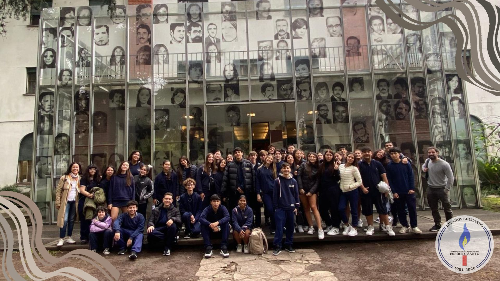
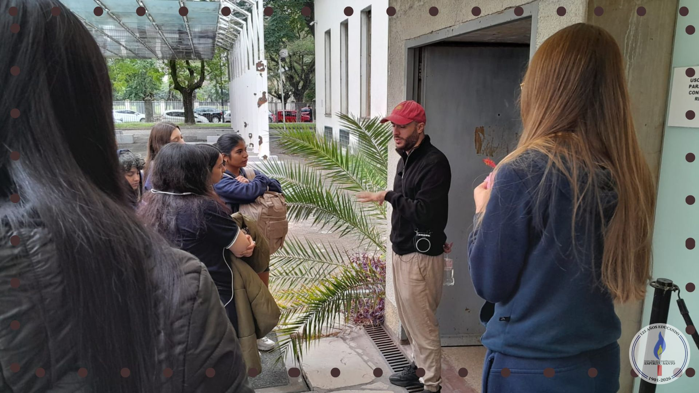

Visita a la ESMA 4º A y B
Por: Jazmín Gimenez Miño

Participaron los alumnos de 4to
Ubicada en la Ciudad de Buenos Aires, la ESMA (Escuela de Mecánica de la Armada) funcionó durante la última dictadura militar argentina como uno de los principales centros clandestinos de detención, tortura y exterminio. Hoy, convertida en Espacio para la Memoria y para la Promoción y Defensa de los Derechos Humanos, es un lugar que invita a reflexionar, a comprender y, sobre todo, a no repetir. En esta experiencia participaron los estudiantes de 4° año A y B del nivel secundario, acompañados por el Profesor Fernando Fariña, la Profesora Griselda Orellano y la Directora de Estudio Yanina Rumacho, quienes guiaron y sostuvieron el recorrido con compromiso y respeto
Dentro del predio, visitamos sectores clave como el Casino de Oficiales. Allí se encontraban los espacios donde las personas secuestradas permanecían cautivas. Nos explicaron cómo eran mantenidas vendadas, aisladas, en condiciones inhumanas, privadas de su identidad y de todo contacto con el exterior. Uno de los momentos más impactantes fue conocer “Capucha”, donde los detenidos permanecían inmovilizados durante largos períodos. También se mencionó “Capuchita”, otro sector similar que reforzaba la lógica de aislamiento extremo.
Además, se abordó el funcionamiento del sistema represivo: cómo las personas eran trasladadas, interrogadas y, en muchos casos, desaparecidas. Otro aspecto que nos impactó fue conocer que dentro de ese mismo lugar también hubo mujeres embarazadas detenidas, muchas de las cuales dieron a luz en cautiverio. Sus hijos fueron apropiados ilegalmente, una lucha que continúan las Abuelas y Madres de Plaza de Mayo en su incansable búsqueda de verdad y memoria
Porque el pueblo que olvida su historia, está condenado a repetirla. Ni olvido ni perdón.
Memoria, Verdad y Justicia.

Leer otras notas
Misa por la educación
Acto de conmemoración del Día Nacional de la Memoria por la Verdad y la Justicia - 24 de Marzo
Publicidad